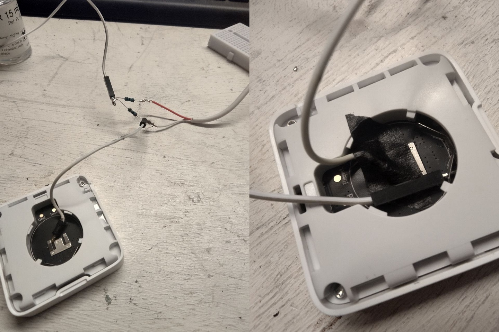

The recent LTT video about converting battery-powered smart appliances to run on wired power instead reminded me that I did something similar recently for my Mi Humidity sensor because I'm too cheap to buy a coin cell every year.

Except that I don't care about going even jankier than a usual LTT video would, so I just used my old pal the voltage divider.
Since the Mi monitor takes a classic CR2032, you should normally adjust to give it 3V -- But I noticed the monitor ran just fine on 2.5V, so it's easier to use the same resistor on both sides of the divider to slash the voltage by half.

Using stronger resistors will reduce the current going through your divider, so you'll want to try various ohm values* to get a current that'll still let that lil' appliance do its job.
It's quite convenient if you have some of those newfangled wall plugs that have a USB port included! The first resistor does get a tiny bit warm though. :^)
* I use https://ohmslawcalculator.com/voltage-divider-calculator to calculate my voltage dividers, but that tool doesn't give you amperage calculations. I can't remember which resistor value I used I'm sorry